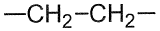
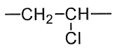
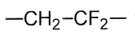
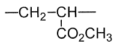
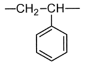
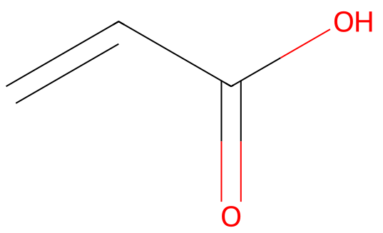

令和2年度 問14 高分子化学
次の高分子材料の繰り返し単位の構造式で、誤っているものはどれか。
- ポリエチレン

- ポリ塩化ビニル

- ポリフッ化ビニリデン

- ポリメタクリル酸メチル

- ポリスチレン

①
選択肢1
②
選択肢2
③
選択肢3
④
選択肢4
⑤
選択肢5
正答
④
問題中に表示されているのはポリアクリル酸メチルです。ポリアクリル酸メチルの-CO2CH3が結合している炭素の水素原子がメチル基に変わったものがポリメタクリル酸メチルです。
似た名称が多く分かりづらい特徴がありますが、ベースはアクリル酸です。アクリル酸のメチルエステルが問いにもあるアクリル酸メチルです。似た分子として、二重結合の片側にメチル基もついたメタクリル酸メチルがあります。同様に、メチルエステルであるメタクリル酸メチル（PMMA）もあります。
PMMAは水槽などに使われる所謂アクリルです。


2番のポリ塩化ビニルは塩化ビニルの重合体です。塩素原子が一つ増えた-(CCl2-CH2)n-はラップの原料であるポリ塩化ビニリデンと呼ばれます。
3番のポリフッ化ビニリデン（PVDF）はビニル化合物の一部の水素原子がフッ素原子に置き換わっています。耐熱性や耐薬品性を向上させつつも加工性があるフッ素樹脂です。水素原子が全てFに置き換わったポリマーはポリテトラフルオロエチレン（PTFE）と呼ばれます。PTFEはフッ素樹脂の中で代表的でありPVDFよりも耐熱性や耐薬品性に優れます。